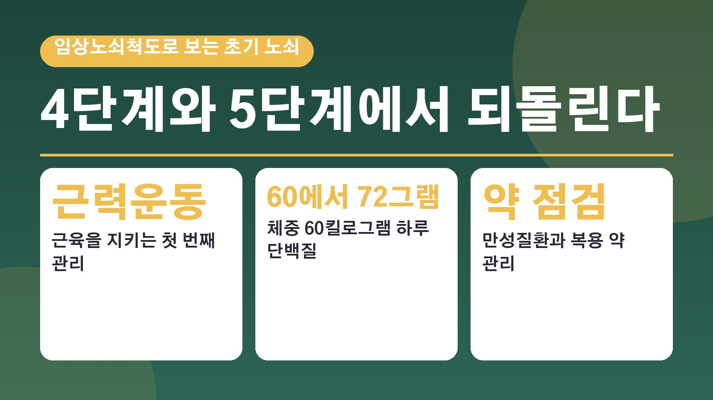
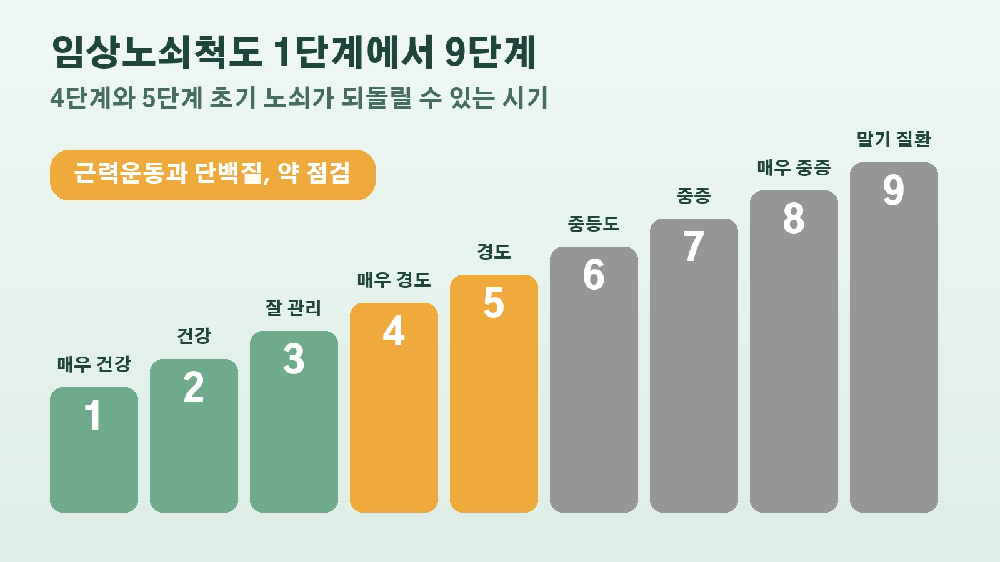

임상노쇠척도 4단계와 5단계 초기 노쇠, 근력운동과 하루 단백질 60그램 이상으로 되돌릴 수 있는 시기

요즘 부모님이 예전보다 걸음이 느려지셨다거나, 장 보고 오시면 유난히 피곤해하신다는 걸 느끼신 적 있으신가요. 그냥 나이 탓이라고 넘기기 쉬운데, 노인의학에서는 이런 변화를 노쇠의 신호로 보고 일찍 챙기면 되돌릴 수 있다고 말합니다. 부산일보가 동아대학교병원 가정의학과 신보경 교수에게 들은 노년기 건강 관리 이야기를 바탕으로, 노쇠가 무엇이고 어느 단계에서 무엇을 하면 좋은지 정리해 볼게요.
노쇠는 노화와 다르다, 일찍 찾으면 회복이 가능한 상태
노쇠는 누구나 겪는 노화나 질병과는 달라요. 일찍 발견해서 운동, 영양, 사회활동을 함께 관리하면 회복할 수 있는 상태를 말합니다. 그래서 최근 노인의학은 나이 숫자보다 신체 기능과 인지 기능, 만성질환, 영양 상태, 사회 활동을 함께 보는 기능적 연령을 중요하게 여긴다고 해요.
신 교수는 노쇠 단계가 높아질수록 낙상과 입원, 기능 상실, 사망 위험이 함께 높아진다고 설명했어요. 거꾸로 말하면 단계가 낮을 때 붙잡는 게 가장 중요하다는 뜻이에요.
1단계부터 9단계까지, 임상노쇠척도로 보는 우리 부모님 위치
병원에서는 신체활동, 일상생활 능력, 질병 상태를 종합해 1단계부터 9단계까지 나누는 임상노쇠척도를 많이 써요. 1단계에서 3단계는 매우 건강하거나 건강하거나 잘 관리되는 상태로, 혼자서 생활하는 데 큰 어려움이 없습니다.
4단계는 매우 경도의 노쇠로, 일상생활은 할 수 있지만 전보다 움직임이 느려지고 쉽게 피로해져요. 5단계 경도 노쇠부터는 보통 노쇠가 있다고 판단하는데, 장보기나 집안일에 도움이 필요해지기 시작합니다. 6단계는 집 밖 활동이나 목욕에 도움이 필요한 경우가 많고, 7단계는 일상생활 전반에 다른 사람의 도움이 필요해요. 8단계는 작은 병에도 상태가 갑자기 나빠질 수 있고, 9단계는 노쇠 정도와 상관없이 기대여명이 6개월 미만인 말기 질환 상태를 말합니다.
근육이 줄면 시작되는 악순환, 근감소증
노쇠로 가는 길목에는 근감소증이 있어요. 나이가 들면서 근육의 양뿐 아니라 힘과 몸을 움직이는 능력까지 함께 줄어드는 질환입니다. 근력이 떨어지면 걷는 속도가 느려지고 의자에서 일어나거나 계단을 오르기가 힘들어져요. 움직임이 줄면 식욕과 영양이 떨어지고, 그게 다시 근육을 줄이는 악순환이 생기는데 이게 이어지면 노쇠가 됩니다.
근감소증은 체성분 검사에서 근육량이 적게 나왔다는 것만으로 진단하지 않아요. 근육량이 줄면서 근력이나 신체 수행 능력도 떨어졌을 때 진단하고, 셋 다 떨어지면 중증으로 봅니다. 특히 손으로 쥐는 힘인 악력이 전신 근력과 앞으로의 건강 위험을 잘 보여 주는 항목이라고 해요. 신 교수는 근감소증이 있는 노인은 그렇지 않은 노인보다 낙상과 장애, 사망 위험이 뚜렷하게 높다고 말했어요.

4단계와 5단계에서 할 일, 근력운동과 단백질과 약 점검
신 교수가 꼽은 시기는 4단계와 5단계의 초기 노쇠예요. 이때 근력운동과 충분한 단백질 섭취, 영양 개선, 만성질환과 먹는 약 관리를 함께 하면 노쇠 진행을 늦추고 기능을 다시 회복할 가능성이 있다고 했습니다.
단백질은 체중 60킬로그램인 어르신이라면 하루 약 60에서 72그램이 권고돼요. 달걀, 생선, 살코기, 두부, 콩, 우유와 유제품을 끼니마다 나눠 드시는 게 좋고, 신장질환이 있다면 개인에 맞게 조절해야 합니다. 먹고 나서 바로 움직이는 습관도 중요해요. 식후에 근육을 쓰면 혈당이 오르는 걸 줄이고 활동량도 자연스럽게 늘어나니, 식사 뒤 산책이나 가벼운 집안일부터 시작하면 된다고 해요. 한 끼를 20분 이상 천천히 드시면 과식을 줄이는 데 도움이 된다는 조언도 있었어요.
약도 함께 살펴봐야 해요. 나이가 들수록 만성질환이 늘면서 먹는 약 종류가 많아지는데, 복용하는 약이 근육 건강에 영향을 줄 수 있어 여러 약을 드시는 어르신은 한 번 점검해 보는 게 필요하다고 합니다.
나이대별로 달라지는 관리 목표
신 교수는 나이대마다 초점이 다르다고 설명했어요. 60대는 앞으로 20년에서 30년을 건강하게 보내기 위해 만성질환을 적극 관리하는 시기이고, 70대는 혼자 일상생활을 이어 갈 수 있는지가 중요해져 낙상 예방과 근감소증 관리에 신경 써야 해요. 80대는 여러 질환과 여러 약이 겹치는 문제가 커지는 만큼, 나이만 보고 치료가 어렵다고 단정하기보다 노쇠 정도와 기대여명, 치료로 얻는 이득을 함께 따져야 한다고 했고요.
90대 이상은 병을 완벽히 고치기보다 삶의 질과 기능을 지키는 게 목표가 돼요. 너무 엄격한 혈압이나 혈당 조절, 꼭 필요하지 않은 약은 오히려 어지럼증이나 낙상, 저혈당 같은 부작용을 부를 수 있다는 설명이었어요. 내 다리로 걷고 내 힘으로 일어나 도움 없이 일상생활을 하는 기간을 최대한 늘리는 것, 신 교수가 말한 건강한 노화는 결국 그 기간을 지키는 일이었습니다.
참고한 기사: 부산일보 초기 노쇠 단계에 근력 운동 영양 개선 질환 관리하면 도움 2026년 10월 20일
태그
노쇠 초기노쇠 임상노쇠척도 근감소증 노인근력운동 노인단백질섭취 건강한노화 낙상예방 부모님건강 다약제